Stage profiles
Stage 1
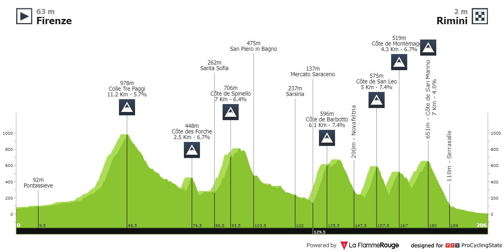
Medium mountain
This is the best opening stage profile I think we’ve ever had. Lots of climbing, but that final hill just isn’t hard enough for the pure climbers. The question is whether any of the really sprinty climby types can be there at the end to challenge Pog in a reduced sprint.
Stage 2
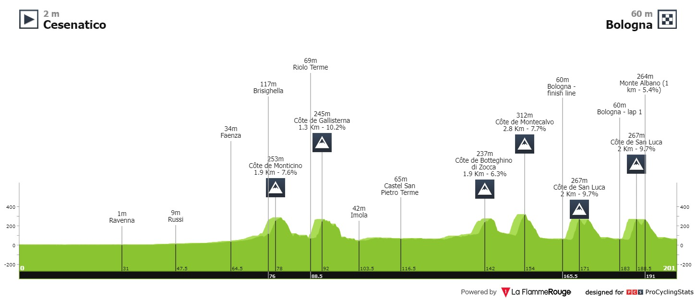
Medium mountain
The Italian start continues with a miny Giro dell’Emilia. The climb to the Sanctuary of Saint Luca is tackled twice and, while short, super steep. This was Alaphilippe’s terrain back in the day, but now it’s Pog pog pog (seriously it’s worth emptying the isaver account).
Stage 3
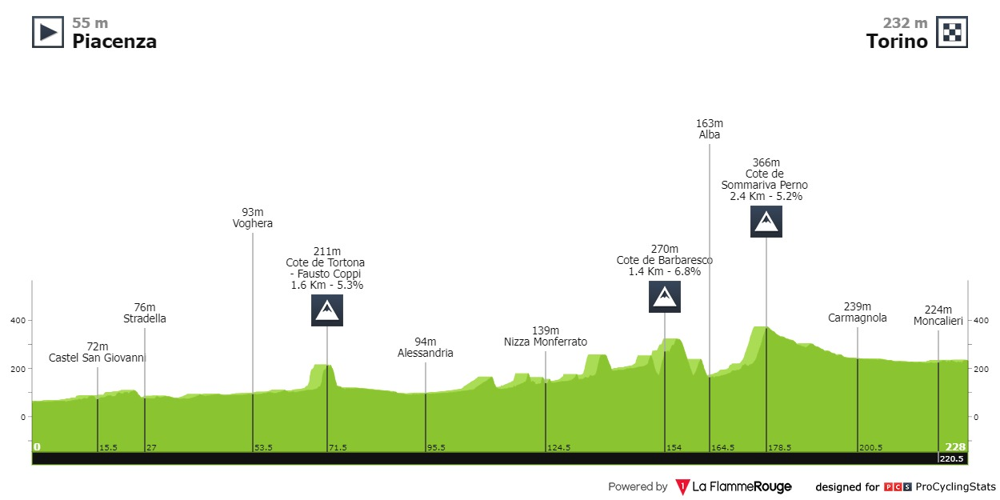
Flat
First chance for the pure sprinters. Expect lead-out train carnage.
Stage 4
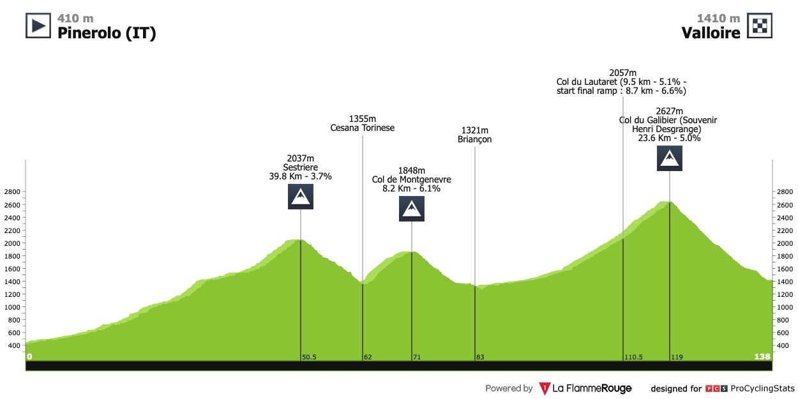
Extreme mountain
Holy shit the Galibier this early. Jonas, Remco and Primoz better hope those last minute altitude camps paid dividends. Luckily for them, this is the gradual side of Galibier.
Stage 5
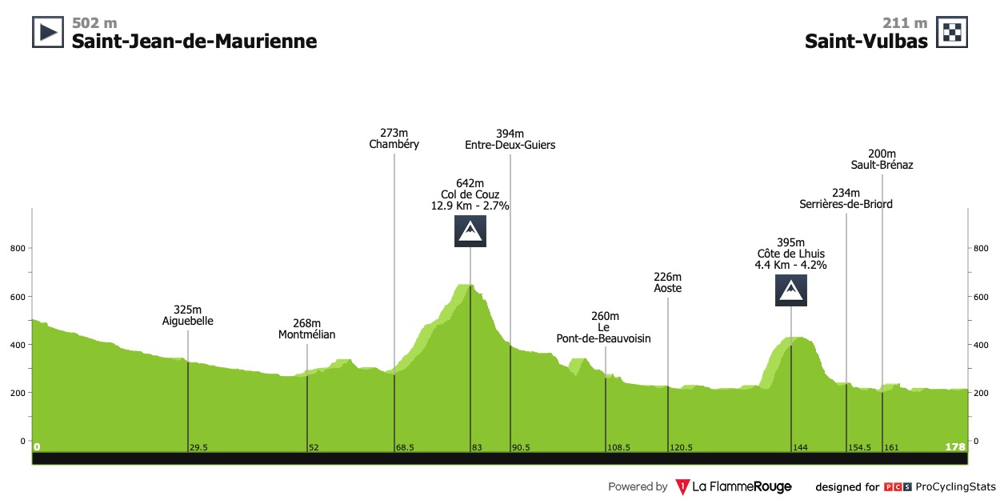
Flat
Given this looks like we’re sprinting again, lets discuss lead-outs. The days of long trains are over, with Quickstep not even bringing a sprinter. The new tactic is to have one really fast lead-out that hits the front in the last few hundred metres. Think MVDP helping Philipsen last year. That duo returns and in terms of team power, might only be rivaled by Cav’s Astana.
Stage 6
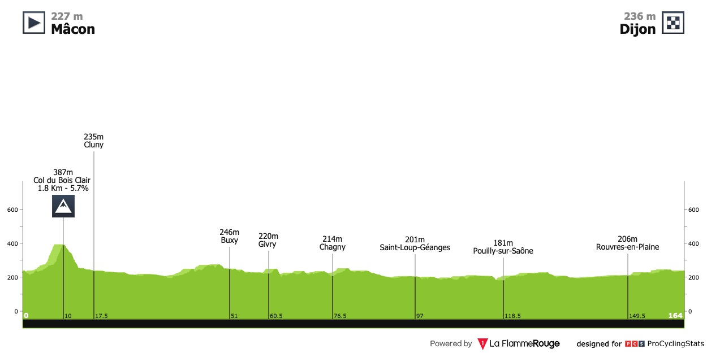
Flat
Who’s the best sprinter here? Philipsen, Merlier and Milan have dominated sprints this year, but of those three, only Philipsen is on the startlist.
Stage 7
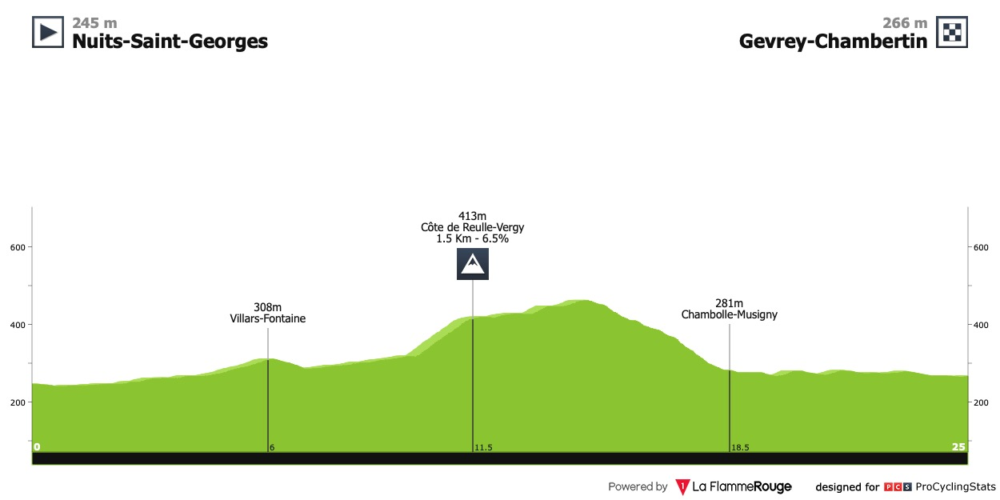
Time trial
Remco is the most aerodynamic man on the planet and this is the perfect course for him. If he’s serious about yellow, we need to see him put 45 secs + into all his rivals.
Stage 8
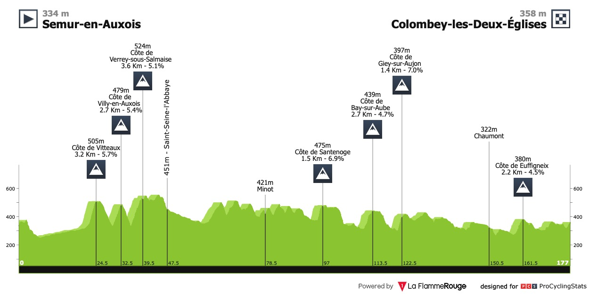
Flat
A bit of an uphill sprint but nothing too exciting. Get some sleep.
Stage 9
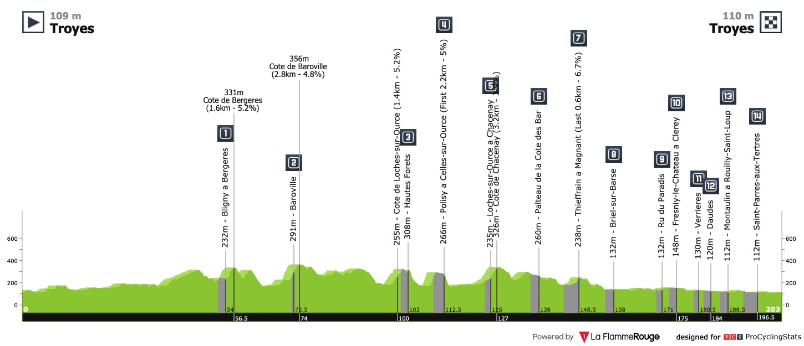
Gravel
Will this be hard? I have no idea. Apparently the gravel is pretty rough, but there aren’t the hills to make this selective. Some flimsy GC pretender will crash out today (looking at you Enric).
Stage 10
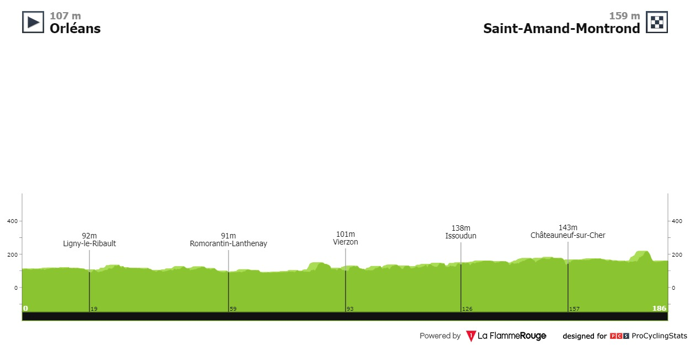
Flat
Lots of sprinting at the front end of this tour. Could Cav finally break the Mercx record?
Stage 11
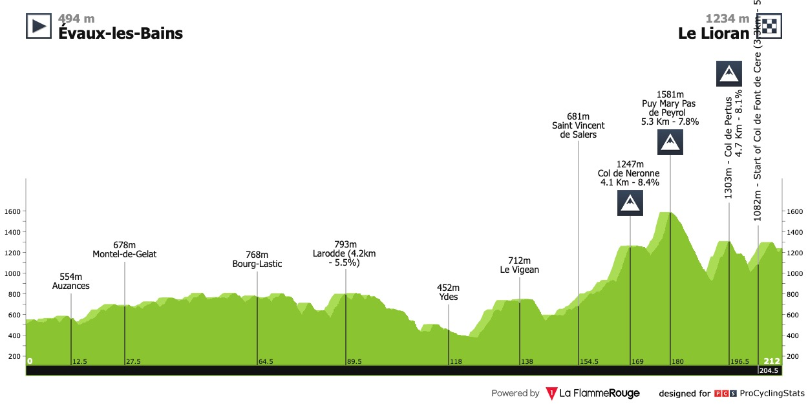
Medium mountain
Pretty much every GC rider in the world tour is at this TDF and this is where we find out how they stack up. Those climbs at the end are short, but they;re steep. I don’t expect them to be big, but I do expect GC gaps today.
Stage 12
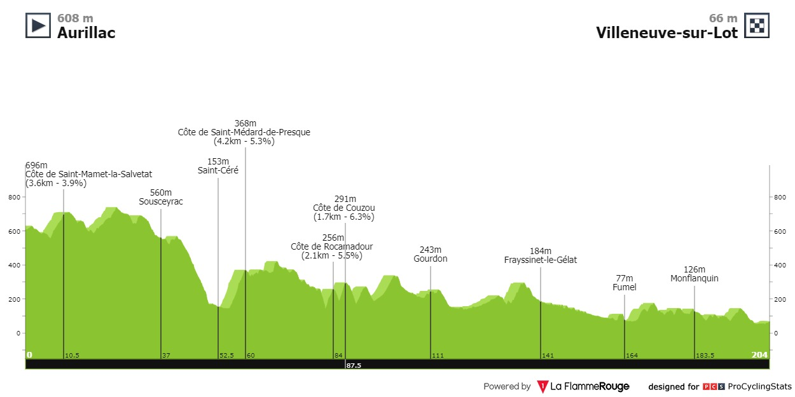
Flat
More sprinting. Maybe we should prioritise sprinters…
Stage 13
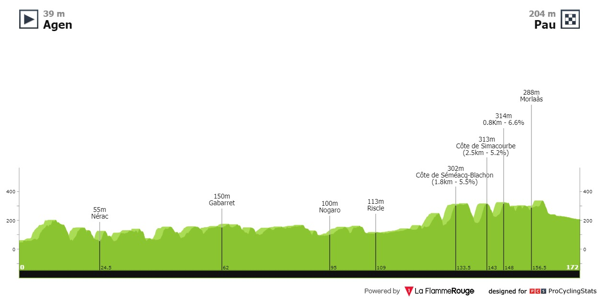
Flat
See above.
Stage 14
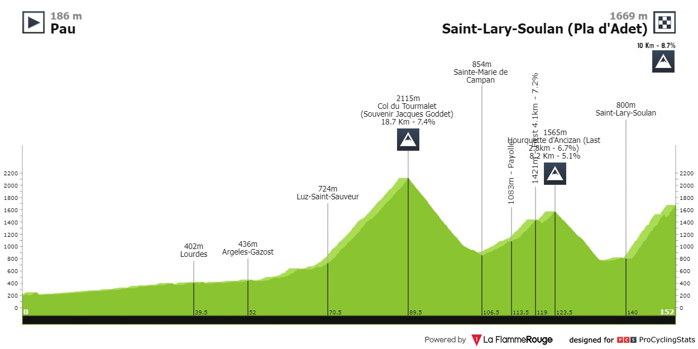
High mountain
Big kilajoules day before a very hard final climb. Kilajoules burnt positively correlates with gc gaps so circle this one on the calendar. A Jonas day if he has the shape.
Stage 15
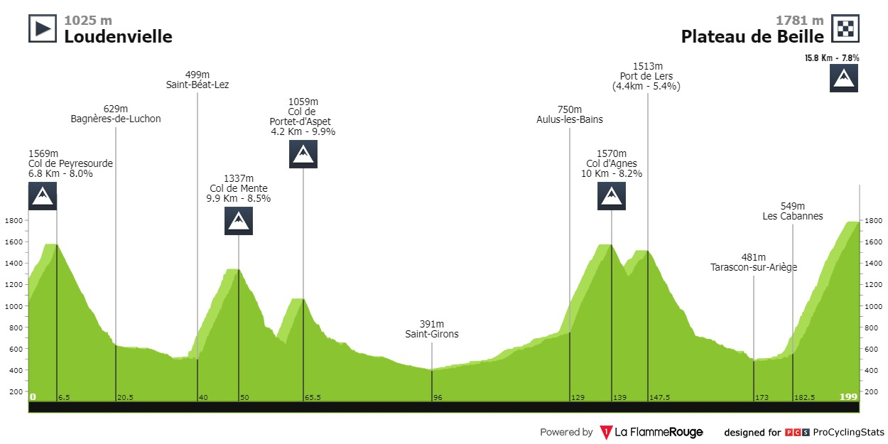
High mountain
Nothing will happen here until the final climb because of the long valleys that separate the mountains. This is the first stage I think the breakaway is likely to win.
Stage 16
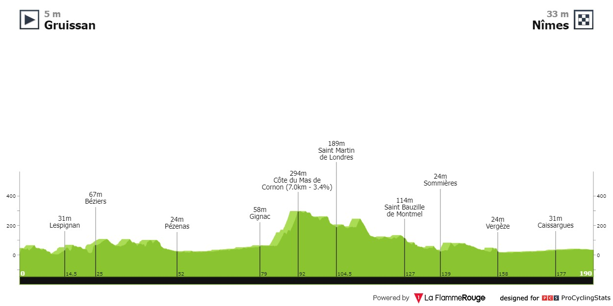
Flat
I don’t have much left to say about sprinting, so lets briefly mention some outside stage candidates. In no particular order there’s Pedersen, Bennett, Bauhaus, Groenewegen, Jakobsen and De Lie.
Stage 17
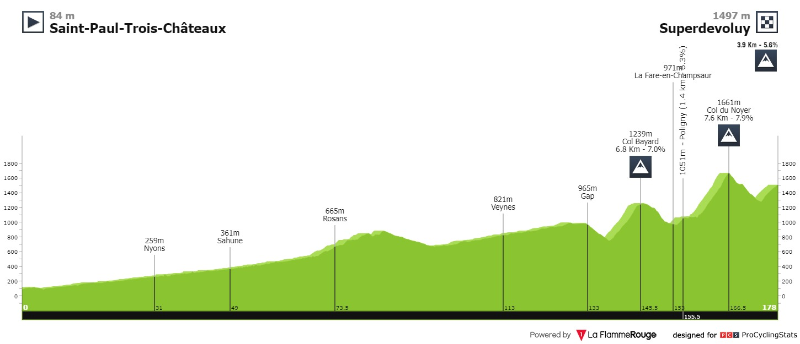
Medium mountain
Get in the break fellas. Note that I might be wrong about the lack of break chances before today. UAE don’t have the team to chase a break, so it all depends on Jonas’ form, because Jumbo certainly have the team to keep a break in check.
Stage 18
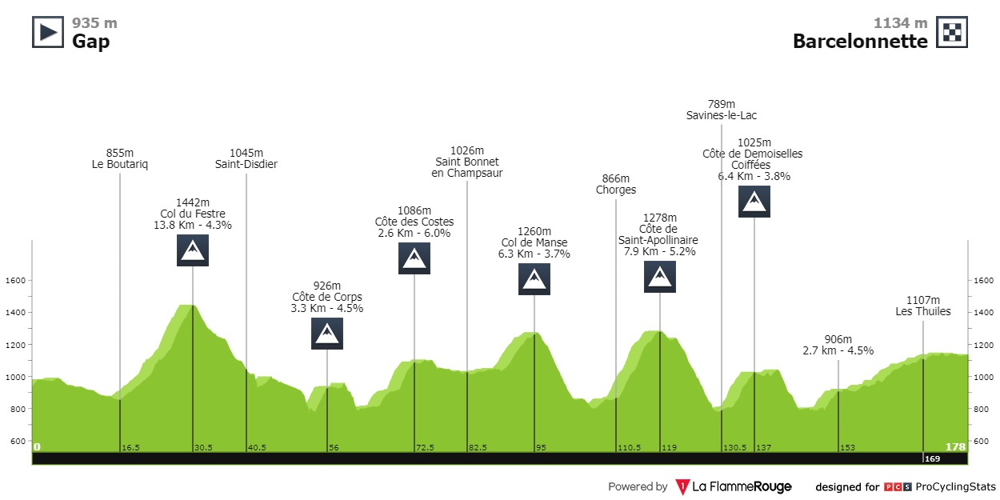
Medium mountain
If you missed the break yesterday, you’d want to get in today.
Stage 19
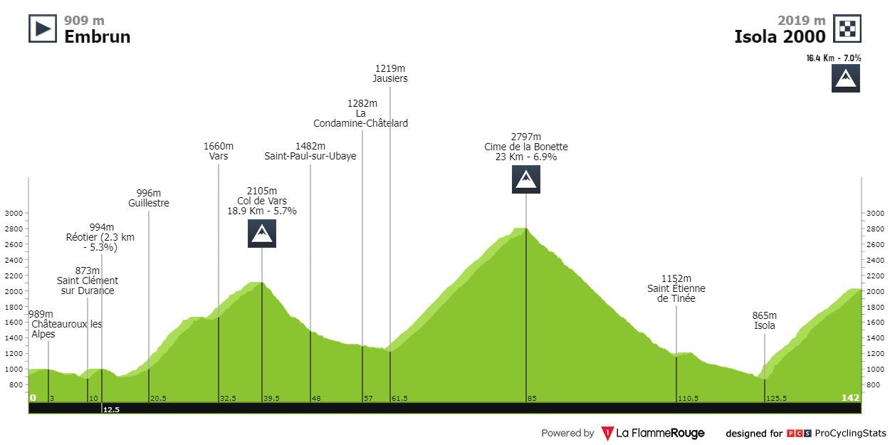
Queen stage (stupid mountains)
Circle this one. Look how high Bonette is! This stage is so important that all the rich teams held their altitude camps at Isola this year. It’s also the place where Pog’s greatest weakness - climbs over an hour after big kilajoule expenditure - should get taken to task. He showed great improvement in this area at the Giro, but there was no one there that could truly challenge him. Jury’s out on whether the tour will be any different.
Stage 20
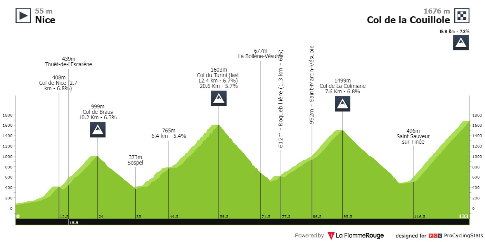
Extreme mountains
The final battle for yellow and the dots. Plenty of raid potential. If the time gaps are close this could be awesome. It’s worth quickly talking about the teams here: UAE and Bora bring the best climbing teams to a tour since 2012 Sky. UAE is so stacked that a 1, 2, 3 on gc is a real possibility. Bora bring Hindley, Roglic and Vlasov who should all be top 10 level at worst.
P.s how tired will Pog be at this point after a Giro-Tour double?
Stage 21
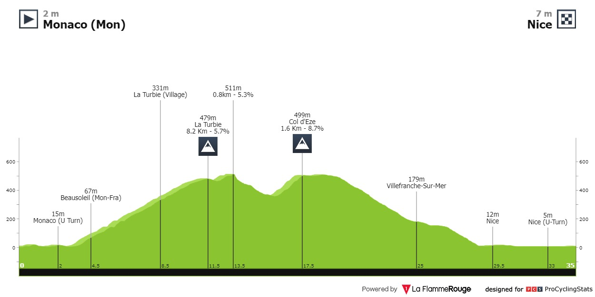
Mountain TT
No Champs this year because of the Olympics. Instead, we get a brutal time trial. Is it to much to hope for a Pogacar style inspirational comeback a la 2020?